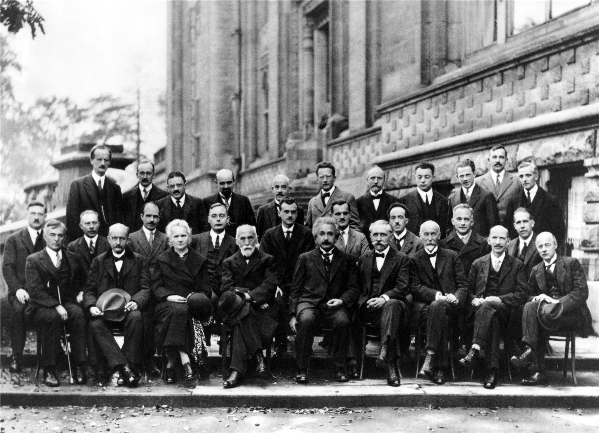

|ψ⟩
State & evolution
A state contains amplitudes for possible measurement outcomes. Between measurements, an isolated state evolves continuously according to the Schrödinger equation.
Quantum mechanics describes physical states with complex amplitudes. Amplitudes combine and interfere; their squared magnitude gives outcome probabilities. The theory predicts atoms, lasers, chemistry, semiconductors, and every particle detector on this site.
i hbar d psi / dt = H-hat psi, P(x) = |psi(x)|^2The wavefunction is a mathematical representation of a quantum state. Its phase matters because amplitudes can reinforce or cancel. A measurement produces one recorded outcome sampled from the distribution predicted for the chosen measurement.
A state contains amplitudes for possible measurement outcomes. Between measurements, an isolated state evolves continuously according to the Schrödinger equation.
Alternative amplitudes add before probabilities are calculated. Their phases create bright and dark regions that no mixture of independent classical paths can reproduce.
Position and momentum cannot both have arbitrarily narrow distributions in one state. This is state structure, not merely a clumsy instrument disturbing a pre-existing exact pair.
Each simulated particle produces one localized mark. The pattern emerges only after many events. Change slit separation and wavelength to reshape the interference spacing; closing the path information is essential to preserve interference.
This sampler draws hits from an idealized far-field two-slit distribution with a smooth envelope. It does not simulate a particular electron gun, photon source, or detector.
Calculated probability model
Point positions are pseudorandom samples from the displayed distribution. Repeated short tones sample detector hits: higher vertical positions produce higher pitches. They are not sounds emitted by quantum particles.
No ordinary camera sees a wavefunction. Experiments record counts, positions, energies, currents, or spectra; physicists compare those records with quantum predictions. Calculated orbitals are still powerful pictures—provided we label what they encode.


Different interpretations can agree on the same laboratory probabilities. The operational predictions are extraordinarily well tested; questions about ontology, measurement, and quantum gravity remain active.
A measurement is a physical interaction that creates a stable record. Standard quantum calculations do not require a human mind to cause an outcome.
See how detectors make records →For large systems interacting strongly with environments, decoherence suppresses observable interference between alternatives. Classical trajectories emerge as an approximation, not a separate set of fundamental rules.
Return to classical trajectories →Ordinary nonrelativistic quantum mechanics does not allow particle creation and annihilation. Quantum field theory combines quantum principles with special relativity.
Meet field excitations in the Particle Zoo →The Periodic Table uses electron configuration and orbitals. The Particle Zoo uses quantum fields and decays. Big Bang nucleosynthesis and the cosmic microwave background depend on quantum and statistical processes in the early universe.
These public science sources separate tested quantum structure from the metaphors used to teach it.